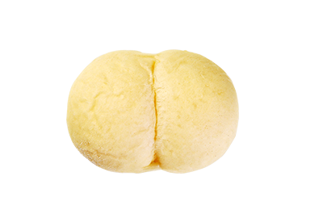
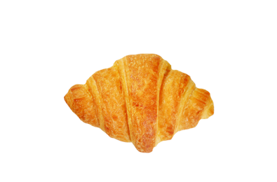
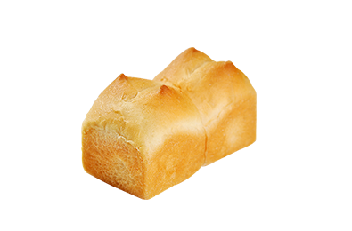
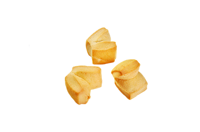
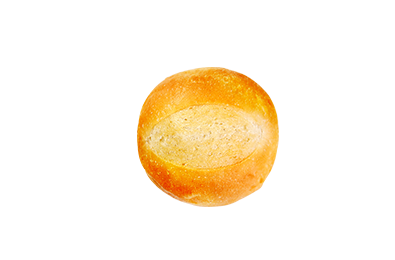
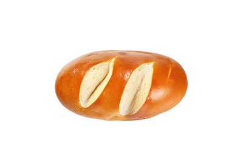

产品优势 ——
产品优势：
原料优势：产品原料70%以上源自进口，拥有长期稳定的采购渠道
设备优势：进口大型流水线，全程PLC管理，保证产品的稳定化量产
管理优势：原料，生产，出货全程按照日本标准管控
研发优势：日本负责提供产品研发支持
从原材料到出厂成品，严格把控每一个安全细节；从设备到研发，以稳定专业的技术提供更优化的产品服务；以细致追求卓越，以卓越寻求合作，将我们的美味奉献给每一位热爱生活的人。
-

白面包
White Bread
精选多种原材料配合日本工艺，日本研发酵母，采用中种法发酵，半手工成型，口感宣软
READ MORE -

法式切片吐司
FrenchToast Slices
秘制牛奶蘸汁浸润法式吐司。日本研发酵母，采用中种法发酵，绵软丰润，香甜浓郁
READ MORE -

小牛角
Croissant
采用泰国进口高筋粉和优质进口黄油，使用荷兰先进设备，24层折层，外表酥脆，内里松软，是早餐菜单中咖啡的好伴侣
READ MORE -

C烧成黄油卷
Butter Roll
采用泰国优质高筋粉、上等新西兰黄油，加入德国淡奶油，面包筋道柔软，风味浓郁
READ MORE -

酵香小主食30个装
Small Staple Food
精选面粉配合进口天然黄油，日本研发酵母配合中种法发酵方式。蓬松宣软，奶香浓郁
READ MORE -
迷你奶油主食 （奶油/巧克力/抹茶）
Mini Cream Bread
精选面粉配合进口天然黄油，42层均匀折叠。采用日本研发酵母中种法发酵。原味、抹茶、巧克力，三种风味满足不同口味需求
READ MORE -
英式松饼
Scone
精选多种原材料配合日本研发酵母，采用中种法发酵，成就健康松软的英式松饼
READ MORE -

迷你原味饼干12g
Little Cookie
优质新西兰黄油折叠72层；32mm迷你尺寸，适合女生与儿童；可杯装形式销售，一款适合小伙伴间分享的美食
READ MORE -

C烧成小球面包
Ball bun
采用泰国优质高筋小麦粉，面包柔软有韧劲，低油低糖，更健康
READ MORE -

C烧成碱水面包
Alkaline water bread
采用进口奥地利碱水和优质鲜酵母，二次发酵，外表呈褐色且亮泽，面包口感筋道十足
READ MORE -

C烧成核桃面包
Walnut Bread
精选面粉配合日本研发酵母，中种法发酵，精选核桃仁经秘制原料翻炒，成就香甜扎实的美味
READ MORE -

C烧成奶油柑橘面包
Orange Butter Bread
采用优质新西兰黄油，使用荷兰设备36层折层，再均匀涂抹秘制橙皮丁果酱，烤制后层次分明，外皮酥脆，每一口都带有淡淡橙皮香气
READ MORE